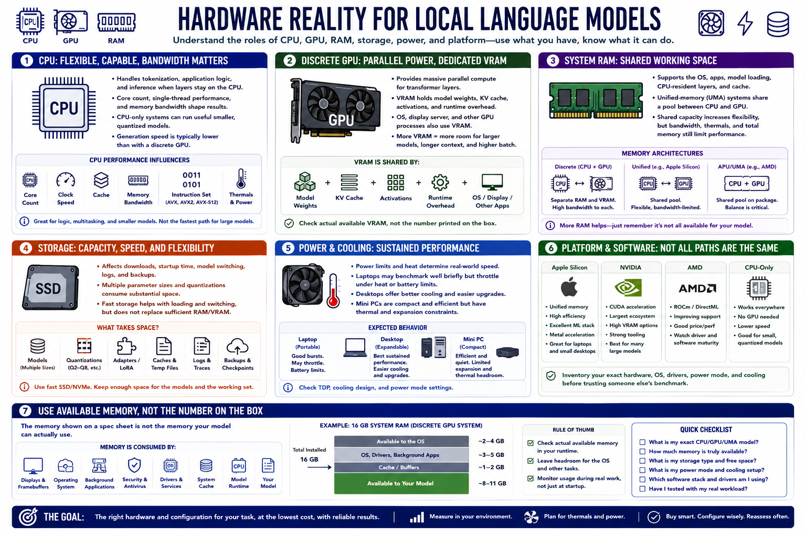

Know Your Hardware Limits
Connecting to LMS... Progress: in progress

Narration
The CPU supports tokenization, application logic, and inference when layers remain on the processor. Core behavior and memory bandwidth influence CPU performance. CPU-only systems can run useful smaller quantized models but may have lower generation speed.
A discrete GPU provides parallel compute and dedicated VRAM. VRAM must hold model weights, cache, activations, and runtime overhead for accelerated work. The operating system and display may also consume part of the available memory.
System RAM supports the operating system, applications, model loading, CPU-resident layers, and cache. Unified-memory systems share a pool between CPU and GPU. Shared capacity can increase flexibility, but bandwidth, thermals, and total memory still limit performance.
Storage affects download capacity, startup, model switching, logs, and backups. Keeping several parameter sizes and quantizations can consume substantial space. Fast storage cannot compensate for insufficient working memory during inference.
Power and cooling determine sustained behavior. A laptop may benchmark well briefly and slow under heat or battery limits. Desktops offer easier cooling and upgrades. Mini PCs trade compactness for expansion and thermal constraints.
Apple Silicon, NVIDIA, AMD, and CPU-only systems use different acceleration paths and software support. Inventory exact hardware, available memory, operating system, drivers, power mode, and cooling before using someone else's performance claim.
Use available memory, not the number printed on a product page. Displays, operating systems, background applications, security tools, and other services reduce the capacity the runtime can actually allocate.